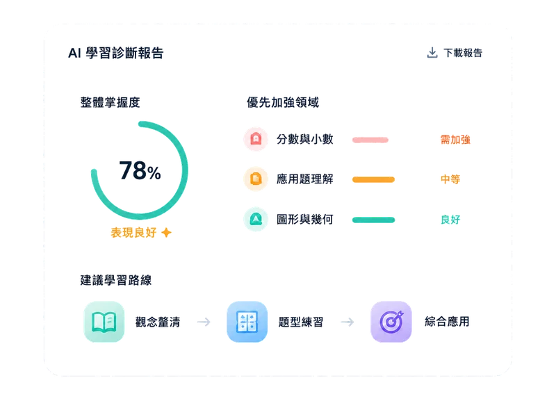
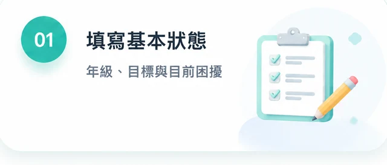

系統體驗
今天做什麼
把弱點拆成孩子做得到的小任務，不再面對一整片壓力。
AI 任務引擎把弱點拆成每日任務，Coach 負責提醒與調整，AiMii Parent 週報把孩子這週的進步與下一步整理給家長。
系統把孩子卡住的地方拆成每日任務，Coach 負責提醒與調整，家長每週看見進度、弱點和下一步。
把弱點拆成孩子做得到的小任務，不再面對一整片壓力。
每日清楚Coach 每週看狀態，該提醒、該鼓勵、該調整都有人負責。
有人陪跑用週報呈現時間、弱點、成果與 Coach 建議，不用每天追問。
一眼看懂系統把孩子卡住的地方拆成每日任務，Coach 負責提醒與調整，家長每週看見進度、弱點和下一步。
把弱點拆成孩子做得到的小任務，不再面對一整片壓力。
每日清楚Coach 每週看狀態，該提醒、該鼓勵、該調整都有人負責。
有人陪跑用週報呈現時間、弱點、成果與 Coach 建議，不用每天追問。
一眼看懂系統頁要讓家長看懂：AI 不是拿來炫技，而是幫 Coach 和孩子更快找到正確行動。
從體檢到任務、追蹤與回饋，每一步都有清楚節點，孩子知道今天要做什麼，家長也看得見下一步。
把大目標拆成每日可完成的小任務，用週節奏檢視成果，讓學習不靠臨時衝刺，而是穩定累積。
AI 任務引擎負責快速分析與推薦，Coach 負責理解狀態、鼓勵與修正策略，讓學習不只準確，也有溫度。
先補概念，再做 3 組應用題
家長不需要猜孩子有沒有進步，系統把學習時間、任務完成、弱點改善與 Coach 回饋整理成清楚報告。
完成後會看到孩子目前的掌握度、優先弱點與建議路線。想先讓顧問協助，也可以從 15 分鐘 AiMii 體檢開始。

